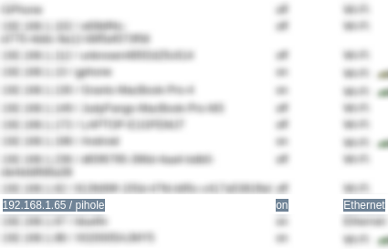

SOHO Privacy Gateway

Why I built this
I had the interest in homelabbing and networking, and I thought an adblocker would be the perfect project to apply my skills to something I would actually use. Once I started learning about this project, I understood that every internet-enabled device in my network was likely being tracked by one source or another. If I could block ads at the DNS level for the whole network, it was a small step toward security and privacy.
What I built
The centerpiece is a Raspberry Pi running Pi-hole, a DNS sinkhole that intercepts DNS lookups for the whole network and returns nothing for domains on its blocklists, so ads and trackers never even load. Around that, I reworked the rest of the home network:
- Set static IPs for key devices, the Pi included, so they don't randomly change and break things like DNS or port forwarding.
- Configured manual port forwarding and custom NAT rules on my AT&T gateway for services I wanted reachable from outside the apartment.
- Set up a VPN gateway so I can remotely connect back into my home network securely from anywhere, instead of exposing services directly to the internet.
How I did it
I mainly used YouTube for learning how to set up a system like this. Here are the steps I took at a high level:
I flashed Raspberry Pi OS Lite, a headless build with no desktop environment, onto a microSD card and did the entire setup over SSH from my laptop, so I never actually plugged a monitor into the Pi itself. After giving it a static IP, I installed Pi-hole and pointed it at upstream DNS-over-HTTPS resolvers, then subscribed it to a handful of blocklists covering ads, trackers, and known malicious domains.
On the gateway side, AT&T's default router isn't exactly built for this kind of thing, so getting manual port forwarding and NAT rules working the way I wanted took some trial and error with its limited interface. For remote access, I set up a VPN gateway using Tailscale, so anything reachable from outside the apartment has to authenticate through the VPN instead of being exposed on the open internet.

Finally, I updated my router's DHCP settings so every device on the network gets the Pi handed out as its DNS server automatically, meaning the filtering just works without touching individual devices.
What I learned
This project taught me a lot about DNS specifically, how much control you actually have over a network just by controlling what DNS resolves to, and how something as simple as a sinkhole can double as a real security tool and not just an ad blocker. I also learned that it's REALLY HARD to go back to browsing the internet on a device that's not connected to the sinkhole. Not seeing over 99% of the ads that I normally would while browsing is so so pleasant.
<< Back to Projects